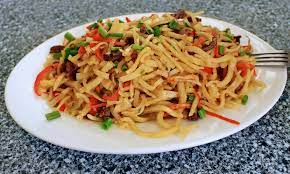

Tsuivan Recipe.

Mongolian fried noodles recipe by Enki Batsaikhan
Ingredients:
Flour
Salt
Beef/Lamb
Onions
Garlic
Water
Carrots
Potatoes
Green Onions
Oil
Steps:
Make the dough using 3 cups of flour mixed with water, then let it rest.
Chop the onions, garlic, carrots, potatoes, and meat into thin pieces.
Knead the dough and cut into 2 pieces.
Flatten the 2 pieces into a giant thin circle.
Pour oil in the middle and coat the whole surface with it.
Roll the thin dough into a cylinder.
Steam the long cylindrical doughs about 15 minutes.
Heat up pan with oil.
Cook the onions, garlic and meat
Add the carrots and potatoes later.
Chop up the steamed cylindrical doughs into 1 inch pieces and unravel them.
Add the chopped noodles into the pan.
Mix and enjoy.